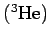

Auftreten
Die SG-Gleichung entsteht aus der BLOCH-Gleichung für räumlich inhomogene quantenmechanische 2-Niveau-Systeme. Sie beschreibt die Ausbreitung
-
ultrakurzer Impulse in resonanten Lasermedien (selbstinduzierte Transparenz),
-
des magnetischen Flusses in großflächigen JOSEPHSON-Kontakten, d.h. in Tunnelkontakten zwischen zwei Supraleitern und
-
von Spinwellen in supraleitendem Helium-3 .
Die Solitonlösungen der SG-Gleichung können durch ein aus Pendeln und Federn bestehendes mechanisches Modell veranschaulicht werden. In der Nähe eines Punktes geht die Evolutionsfunktion stetig von 0 in einen konstanten c Wert über. Ausgehend vom englischen Wort kink für Stufe, nennt man daher die SG-Solitonen meist Kink-Solitonen. Wenn umgekehrt die Evolutionsfunktion von dem konstanten Wert c nach 0 übergeht, werden sogenannte Antikink-Solitonen beschrieben. Mit Hilfe derartiger Lösungen können auch Domänenwände beschrieben werden.